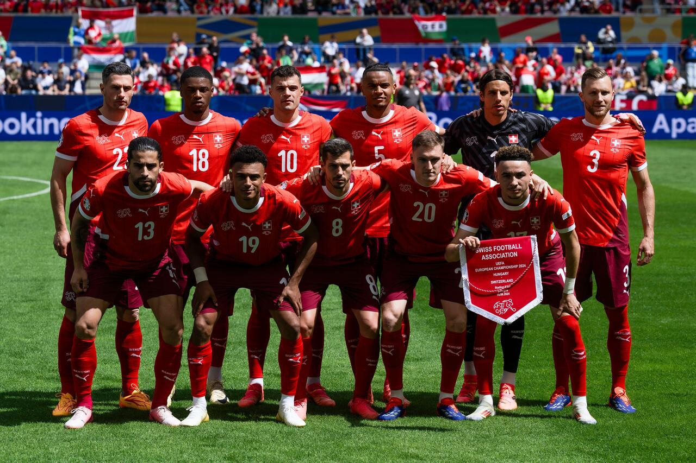

Seleção da Suiça na UEFA Eurocopa
A Suíça tem como objetivo na Eurocopa 2024 melhorar seu desempenho em competições internacionais e tentar avançar o mais longe possível no torneio. com grandes jogadores como o veterano Xherdan Shaqiri, o experiente Granit Xhaka e um dos melhores goleiros do planeta, Yann Sommer.
